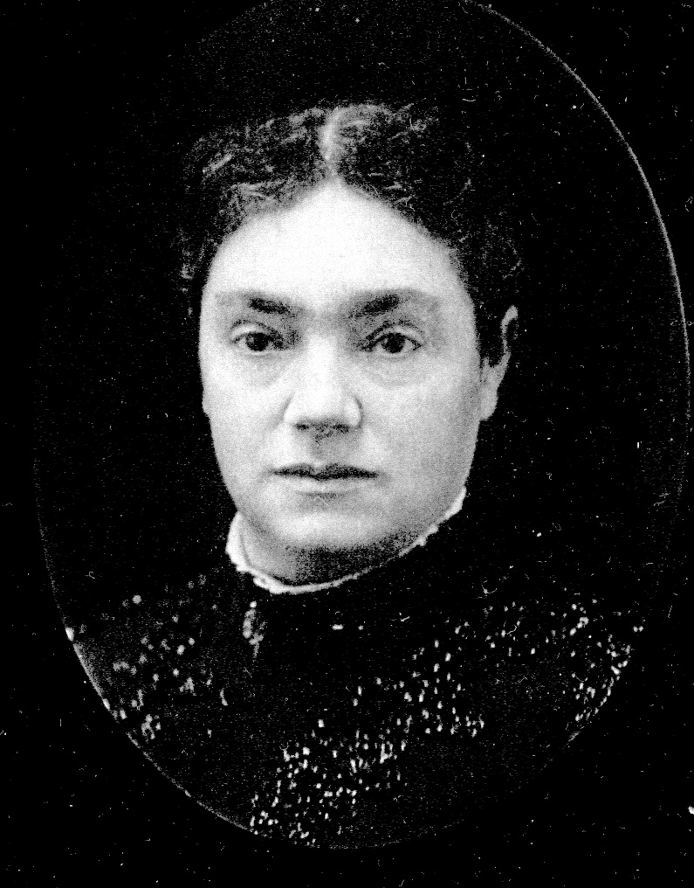

| 
Elizabeth "Lizzie" Jane ALEXANDER (1838-1909) |
Elizabeth "Lizzie" Jane ALEXANDER
FAMILY: Sister-in-Law of Thomas Corwin Mendenhall, Alaska's Mendenhall Glacier's namesake
-- Photo courtesy of tabernathygordon1 (Ancestry.com) Elizabeth married Edwin Dutton MENDENHALL, son of Stephen D. MENDENHALL and Mary THOMAS, on 27 Mar 1856 in New Brighton, Beaver County, Pennsylvania. (Edwin Dutton MENDENHALL was born on 24 Sep 1835 in Columbiana County, Ohio, died on 30 Nov 1902 in Bourbon Township, Marshall County, Indiana and was buried in IOOF Cemetery, Bourbon, Marshall County, Indiana.) |
 General Notes:
General Notes: